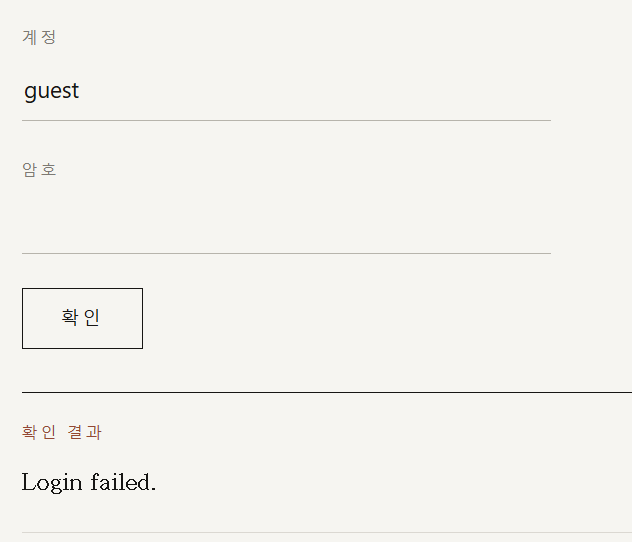
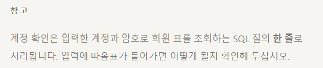
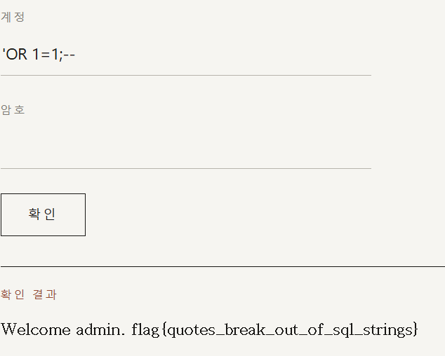

문제설명 :
기획 모임 방명록 서비스의 로그인 폼입니다. 아이디와 비밀번호를 입력하면 서버가 회원 목록에서 일치하는 계정을 찾아 로그인시켜 줍니다.
목표:
비밀번호를 모르는 채로 admin 으로 로그인하라.

계정 아이디와 비밀번호를 입력할 수 있는 란이 있다.

페이지의 밑줄에 힌트를 볼 수 있었다.
질의 한줄로 처리된다는것, 따옴표가 들어가면 어떻게 될지 확인하라는것을 보면 아마 이곳에 적절한 SQL구문을 입력해서 조회조건을 임의로 만족시켜서 flag를 얻어야한다는것 같다.
대충 SELECT ~ FROM ~ Where '조건들' ;
이런식으로 되어있을것이다.

그래서 다음과 같이 작성해주었다. 일단 앞의 조건을 닫아주고 뒤에 참인 조건을 배치해 SELECT 의 범위를 넓혀주었다. 뒤의 조건이 방해가 될 수 있으니 주석처리를 해주었다.
그랬더니 flag가 나왔다.